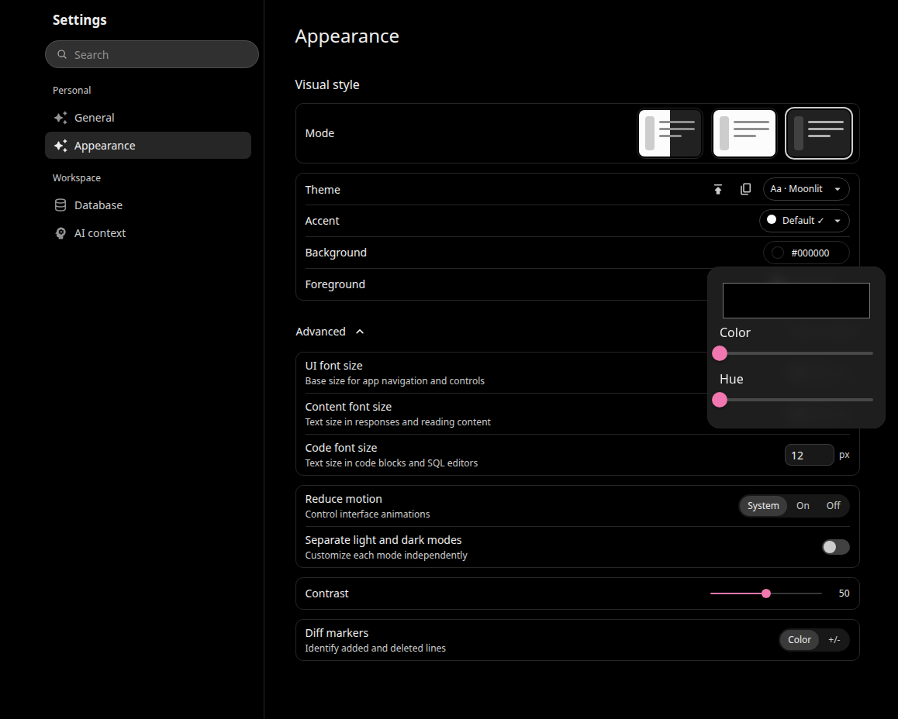
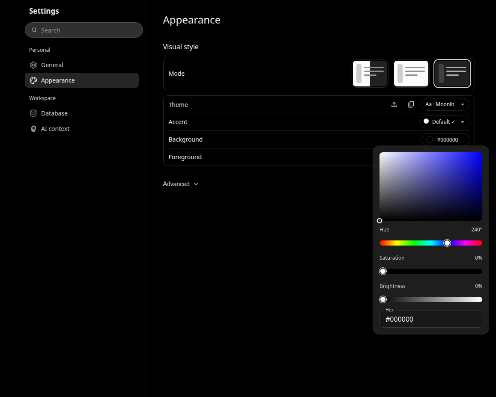
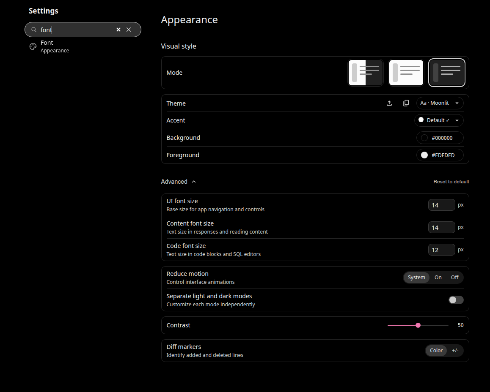
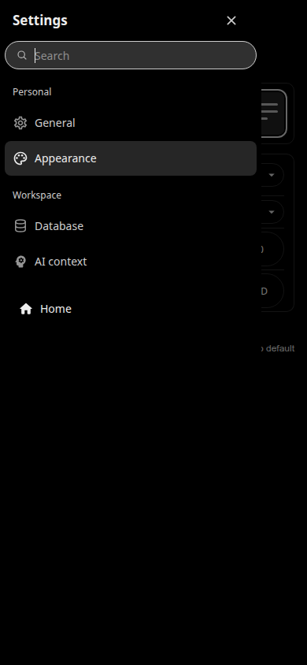
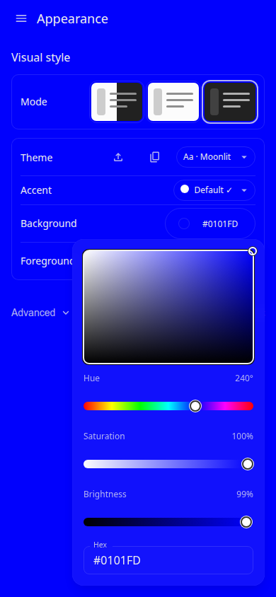
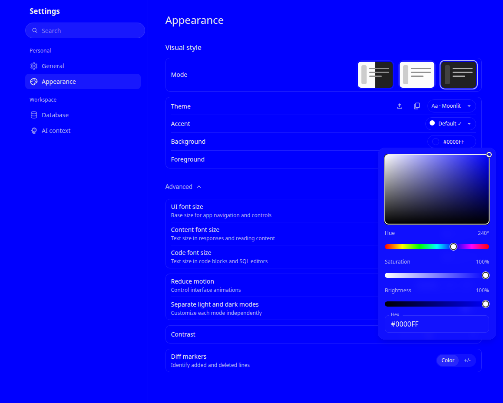
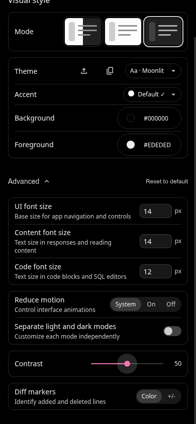

Actual local Chrome captures of the current components in a synthetic account fixture. Development build; desktop 1158×928, mobile 390×844, DPR 1. The composer, SQL editor and chart remain mounted behind Settings.
Implementation report · Browser matrix · Supplemental checks · Companion controls · Before metrics · After metrics · Brief Chrome trace (gzip)
Extract the trace JSON and load it in Chrome DevTools Performance. User Timing marks identify Advanced and picker interactions. These are fixture captures, not an authenticated reference application.






